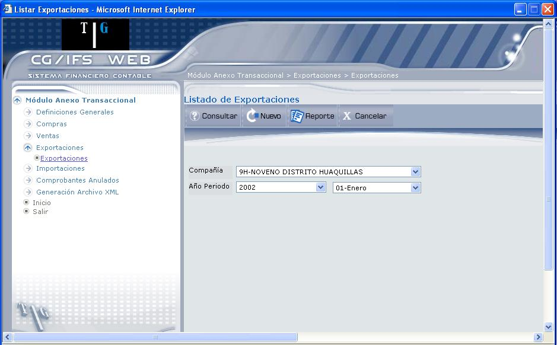
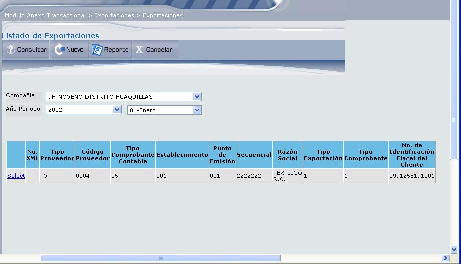
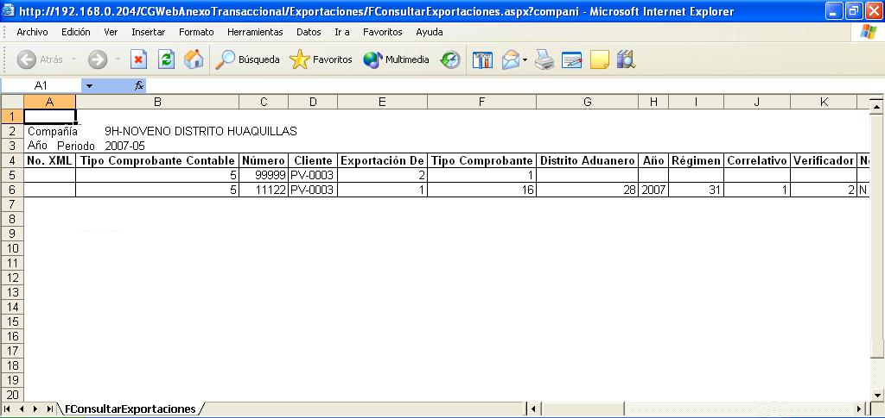
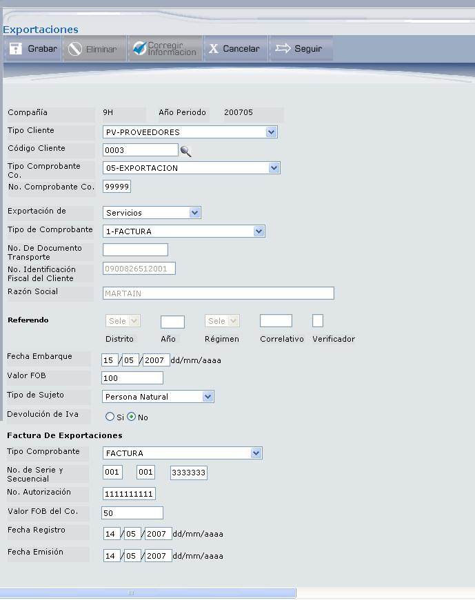
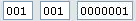
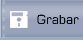
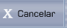

Exportaciones
Esta opción permite trabajar con la información de Exportaciones. La gestión es similar a la de compras. La pantalla que despliega es la que muestra la Figura 3.34. Deberá ingresar los datos que permitirán consultar o crear un registro de importaciones.

Figura 3. Listado de Exportaciones.
Compañía:
Seleccione la compañía para la que se va a consultar o registrar la exportación.
Año Periodo:
Seleccione el año y el periodo en el que desea consultar o registrar una exportación.
BOTONES

Figura 3. Resultado de la consulta de Exportaciones.
Seleccione la transacción dando clic en el vínculo Select, que despliega el detalle del registro, mismo que podrá ser actualizado con el botón Corregir Información.

Figura 3. Reporte de Exportaciones.
Si usted realiza exportaciones de bienes o percibe ingresos del exterior por servicios deberá presentar esta información. En el caso de exportaciones de bienes, Usted reportará a nivel de refrendo los valores que se registran en la Aduana.
En el caso de exportación de servicios, flores, artesanías o bienes perecibles (exportación que no tenga refrendo), reportará los valores correspondientes de las facturas locales emitidas que sustenten dicha prestación.

Figura 3. Nuevo registro de Exportaciones.
Compañía:
Despliega el código de la compañía, año y periodo de registro de la exportación.
Tipo Cliente:
Seleccione el tipo de cliente, que permitirá filtrar la información para un determinado tipo de clientes.
Código Cliente:
Seleccione el cliente al cual se va a registrar la exportación.
Tipo Comprobante Co.:
Seleccione el tipo de comprobante contable que identifica a la transacción.
No. Comprobante Co.:
Digite el número de comprobante de exportación.
Exportación de:
Seleccione que exportación se va a realizar, ésta puede ser: Bienes o Servicios.
Tipo de comprobante:
Seleccione el tipo de comprobante utilizado en la transacción que se va a registrar. Este campo debe ser ingresado en forma obligatoria en el registro de Exportaciones. Se aceptará los siguientes tipos de comprobantes:
- Formulario Único de Exportación (FUE) o Declaración Aduanera Única (DAU) (Solamente para bienes)
- Factura (Solamente para servicios)
- Nota de crédito (Tanto para bienes como para servicios)
- Nota de débito (Tanto para bienes como para servicios)
- Comprobante de Reembolso de Gastos (Tanto para bienes como para servicios)
No. de Documento Transporte:
Solo se ingresa en caso de Exportación de Bienes y corresponde al número registrado en el documento que soporta el transporte de la mercadería con el cual se realizó el registro de la exportación. El campo contiene hasta 13 caracteres numéricos. Cuando el tipo de comprobante sea Nota de Crédito o Nota de Débito, este campo deberá ser llenado con el número de refrendo del comprobante original.
No. Identificación Fiscal del Cliente:
Despliega el número de Identificación en el país de domicilio fiscal del Cliente. Consta de hasta 13 caracteres.
Para las exportaciones donde no se posee REFRENDO, debe ingresarse bajo el concepto de Servicios Serv_FlorArt (Servicios – Flores – Artesanías), escogiendo en tipo de comprobante FORMULARIO ÚNICO DE EXPORTACIÓN y en la Identificación Fiscal del Cliente ingresará los datos del FUE.
Razón Social:
Despliega el nombre del cliente o razón social del cliente del exterior.
Referendo:
Solo se ingresa en caso de Exportación de Bienes y corresponde al número registrado por la aduana (refrendo) con el cual se realizó el registro de la exportación. El campo contiene 16 caracteres numéricos. Cuando el tipo de comprobante sea Nota de Crédito o Nota de Débito, este campo deberá ser llenado con el número de refrendo del comprobante original.
La estructura del referendo debe cumplir con el siguiente esquema:
127 2007 70 123456 1
Distrito Año Régimen Correlativo Verificado
(3 caracteres) (4 caracteres) (2 caracteres) (6 caracteres) (1 caracter)
Fecha Embarque:
En el caso de Exportación de Bienes, se ingresa la fecha efectiva en la que se realizó el Embarque. En el caso de Ingresos del exterior o exportación de servicios, se registrará la fecha en la que se realizó el cobro y se registró contablemente, es decir, al mes al que corresponde el ingreso. La fecha se ingresa con el formato dd/mm/aaaa.
Valor FOB:
En este campo se debe ingresar el valor FOB de los bienes exportados o el valor del ingreso percibido desde el exterior, que consta en el comprobante o documento sustento de la transacción del exterior. En el caso que el Monto de Exportaciones o ingreso del exterior sea cero debe registrar 0.00.
Cuando el tipo de comprobante sea Nota de Crédito o Nota de Débito, este campo debe ser llenado con el valor de la Nota de Crédito o Nota de Débito
Tipo de Sujeto:
Corresponde al tipo de cliente con quien se realiza la transacción. Identifica si el proveedor es una persona natural o una sociedad (persona jurídica).
Devolución de IVA:
Marque el casillero `Si’, si se va a solicitar devolución de IVA de las compras realizadas para que se pueda realizar esta exportación, caso contrario seleccione ‘No’, si no tiene derecho.
Factura de Exportaciones:
Tipo Comprobante:
Seleccione el Tipo de Comprobante con el que se registrará la exportación. Seleccione el tipo de comprobante utilizado en la exportación que se va a registrar, en este campo solo se aceptará el tipo de comprobante Factura. Este campo debe ser llenado si la transacción es Exportación de Bienes o de Servicios.
No. de Serie y Secuencial:
Digite el número de serie (6 dígitos) de la factura de exportación y el número secuencial del comprobante que registra.

En donde el Número de Serie esta compuesto por: tres caracteres para Código de Establecimiento y tres caracteres para Punto de Emisión.
No. Autorización:
Número único que asigna el SRI al contribuyente (proveedor), para poder emitir el comprobante presentado. Consta de diez caracteres.
Valor FOB del Co.
En este campo se debe ingresar el valor de la factura local emitida de los bienes exportados o el valor del ingreso percibido desde el exterior. En el caso que el Monto de Exportaciones o ingreso del exterior sea cero debe registrar 0.00.
Fecha Registro:
Digite la fecha que se registra la exportación, en el formato dd/mm/aaaa.
Corresponde a la fecha en que se realiza la contabilización del comprobante que se registra, consta de 10 caracteres.
Fecha Emisión:
Digite la fecha que se registró el documento de exportación y que corresponde a la fecha de emisión del comprobante que se registra (no debe confundirse con la fecha de elaboración de imprenta), se ingresa con el formato dd/mm/aaaa.
Una vez registrada esta información presione el botón Grabar.
BOTONES


Created with the Personal Edition of HelpNDoc: Single source CHM, PDF, DOC and HTML Help creation